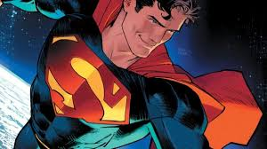
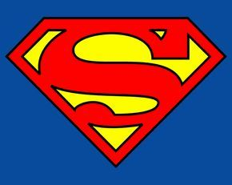
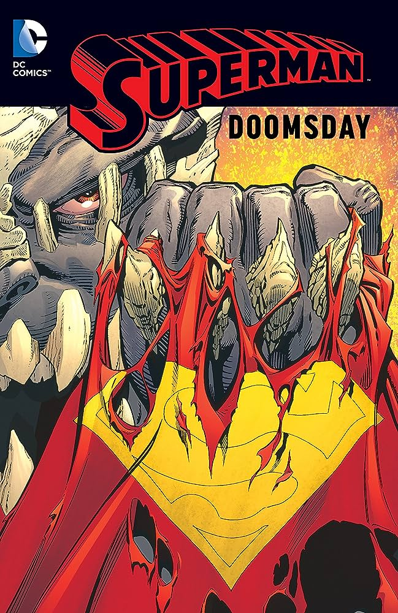
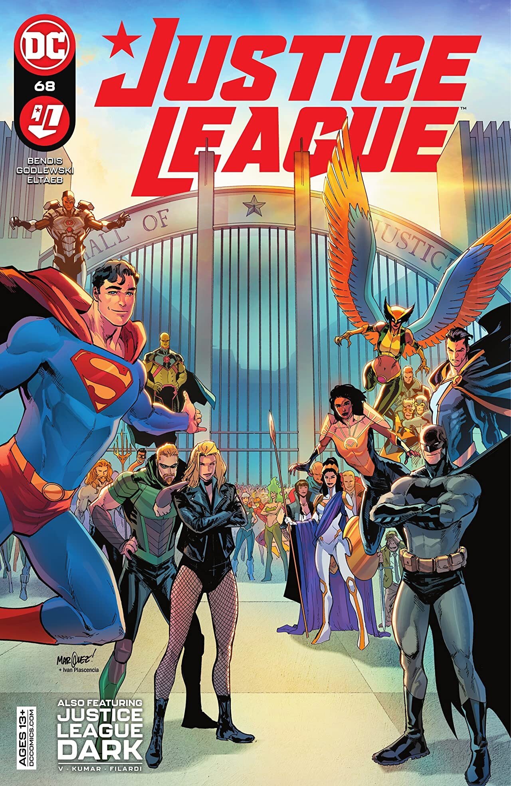
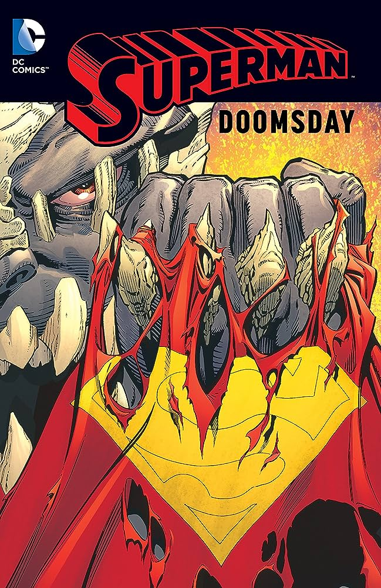
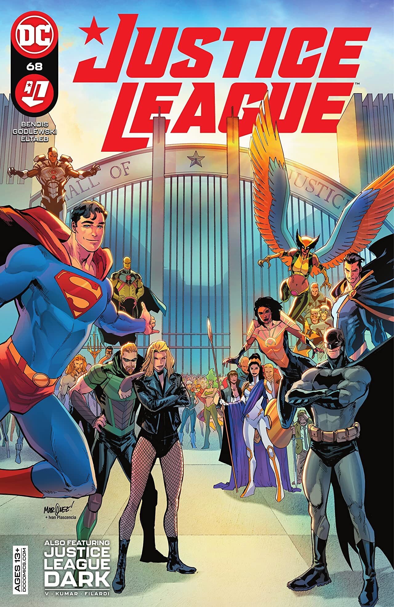

EL MEJOR SUPERHEROE DE TODOS: SUPERMAN
Superman nació en el planeta Krypton y recibió el nombre de Kal-El al nacer. Cuando era bebé, sus padres, el científico Jor-El, y su esposa Lara Lor-Van, lo enviaron a la Tierra en una pequeña nave espacial momentos antes de que Krypton fuera destruido en un cataclismo natural. Su nave aterrizó en el campo estadounidense, cerca de la ciudad ficticia de Smallville. Fue encontrado y adoptado por los agricultores Jonathan y Martha Kent, quienes lo llamaron Clark Kent.
Desarrolló varias habilidades sobrehumanas, como una fuerza increíble y una piel impermeable. Sus padres adoptivos le aconsejaron que usara sus habilidades en beneficio de la humanidad y decidió luchar contra el crimen como un justiciero. Para proteger su privacidad, se pone un traje colorido y usa el alias "Superman" cuando lucha contra el crimen.
Aunque denominado, algunas veces, de manera poco halagadora, como «el gran Boy Scout azul» por otros superhéroes, Superman también es conocido como «El Hombre de Acero», «El Hombre del Mañana» y «El Último Hijo de Krypton» por el público general de los cómics. Bajo la identidad de Clark Kent, Superman vive en medio de los humanos como un «tímido reportero» del diario Daily Planet de Metrópolis. Ahí trabaja junto a la reportera Lois Lane, con la cual ha sido vinculado románticamente. Junto con el fotógrafo Jimmy Olsen y el editor en jefe Perry White. Superman tiene una extensa galería de villanos con su archienemigo el supervillano Lex Luthor.
Las historias de superman estan al alcanze de tus manos dando click aqui

 
Origen y Trasfondo
Poderes y Habilidades
Identidad Dual
Aliados y Amigos
Enemigos
Historias Importantes
Medios de Comunicación
Superman es uno de los superhéroes más icónicos y reconocibles del mundo del cómic y la cultura popular. Fue creado por Jerry Siegel y Joe Shuster y debutó en Action Comics #1, publicado por DC Comics en 1938. Aquí tienes una visión general de Superman:
1. Origen y Trasfondo:
Superman, cuyo nombre real es Kal-El, es un extraterrestre que proviene del planeta Krypton. Fue enviado a la Tierra por sus padres poco antes de que Krypton fuera destruido. Fue encontrado y criado por Jonathan y Martha Kent, una pareja de granjeros en Smallville, Kansas. A medida que crece, descubre sus poderes sobrehumanos bajo el sol amarillo de la Tierra.2. Poderes y Habilidades:
Superman es conocido por sus increíbles poderes, que incluyen: - Fuerza sobrehumana - Velocidad y agilidad increíbles - Vuelo - Visión de rayos X, visión calorífica y visión telescópica - Súper aliento y capacidad de congelar objetos con su aliento - Resistencia y durabilidad aumentadas3. Identidad Dual:
Superman tiene una identidad secreta como el reportero de Daily Planet, Clark Kent. Esta doble identidad le permite llevar una vida normal mientras lucha contra el crimen y protege el mundo como Superman.4. Aliados y Amigos:
Superman es parte de la Liga de la Justicia, un grupo de superhéroes que trabajan juntos para combatir amenazas globales. Algunos de sus aliados y amigos notables incluyen a Batman, Wonder Woman, Flash y Green Lantern.5. Enemigos:
Superman se enfrenta a una variedad de enemigos poderosos, entre ellos: - Lex Luthor: Un genio científico y empresario obsesionado con destruir a Superman. - Brainiac: Un extraterrestre con tecnología avanzada y conocimiento enciclopédico. - General Zod: Un antiguo enemigo de Krypton con poderes similares a los de Superman. - Doomsday: Un ser imparable y destructor que mató a Superman en una historia icónica.6. Historias Importantes:
Algunas historias notables de Superman incluyen "La Muerte de Superman" (donde aparentemente muere en la lucha contra Doomsday), "Superman: Red Son" (que imagina un mundo donde Superman aterriza en la Unión Soviética) y "All-Star Superman" (una exploración del legado de Superman).7. Medios de Comunicación:
Superman ha aparecido en cómics, películas, series de televisión, dibujos animados, libros y más. Ha sido interpretado por actores como Christopher Reeve, Henry Cavill y otros.Superman representa la idea del "héroe por excelencia" y ha tenido un impacto duradero en la cultura popular y en la forma en que se conciben los superhéroes. Su historia y legado continúan fascinando a generaciones de fans en todo el mundo.
Poderes de Superman
- Volar
- super Velocidad
- rayos laser
- super fuerza
- super oido
Villanos de Superman
- Lex luthor
- Brainiac
- darkseid
- general Zod
 



Lugares donde vive Superman
- Smallville
- Metropolis